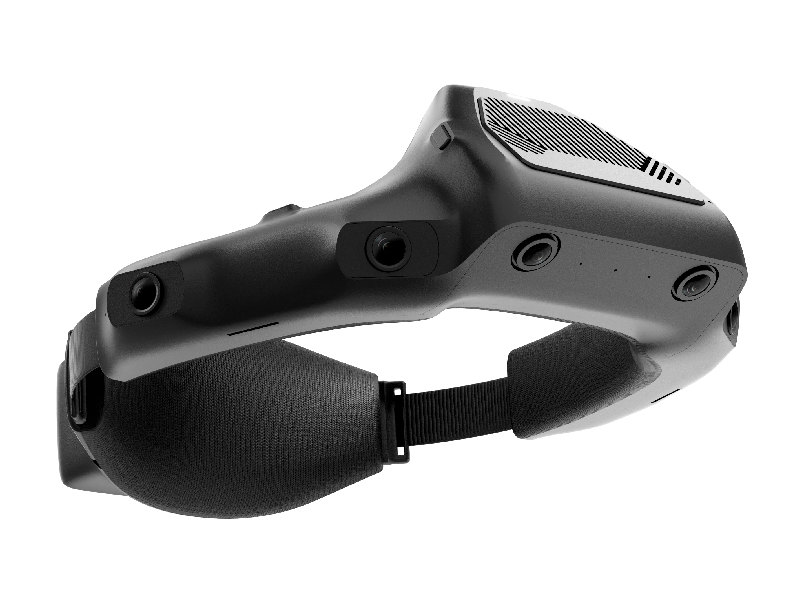
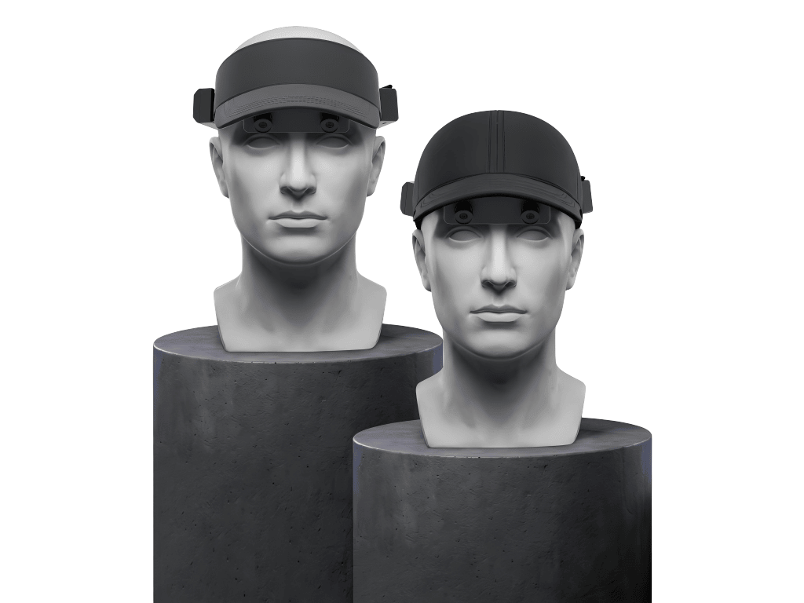
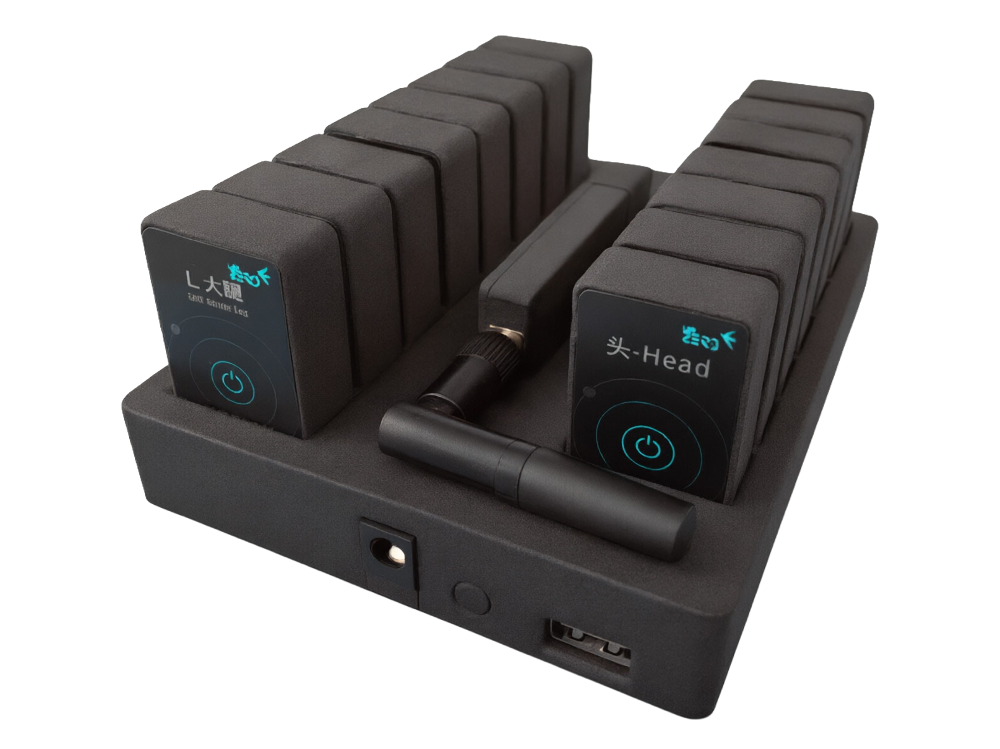
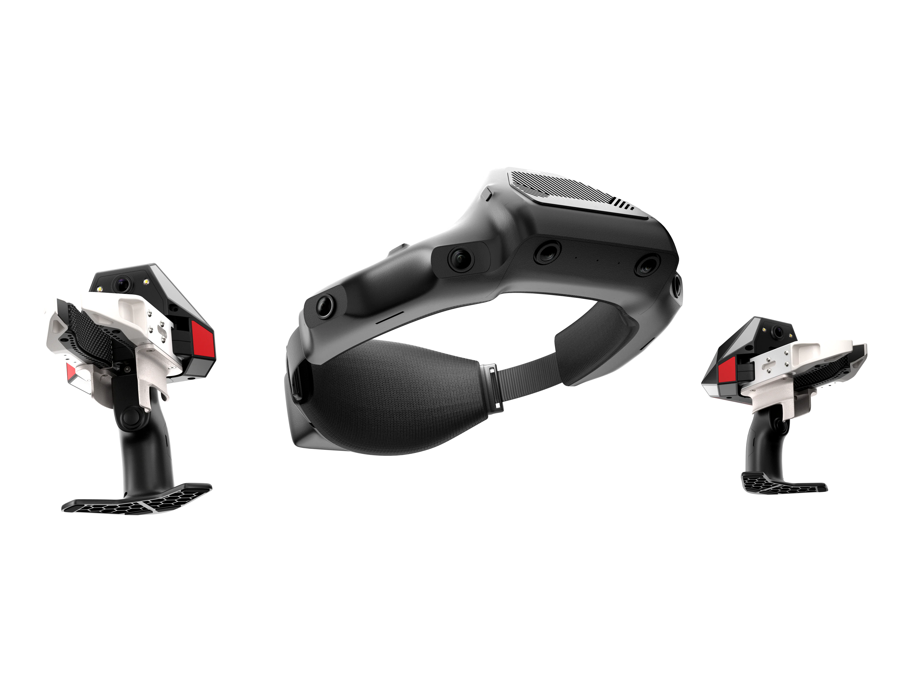
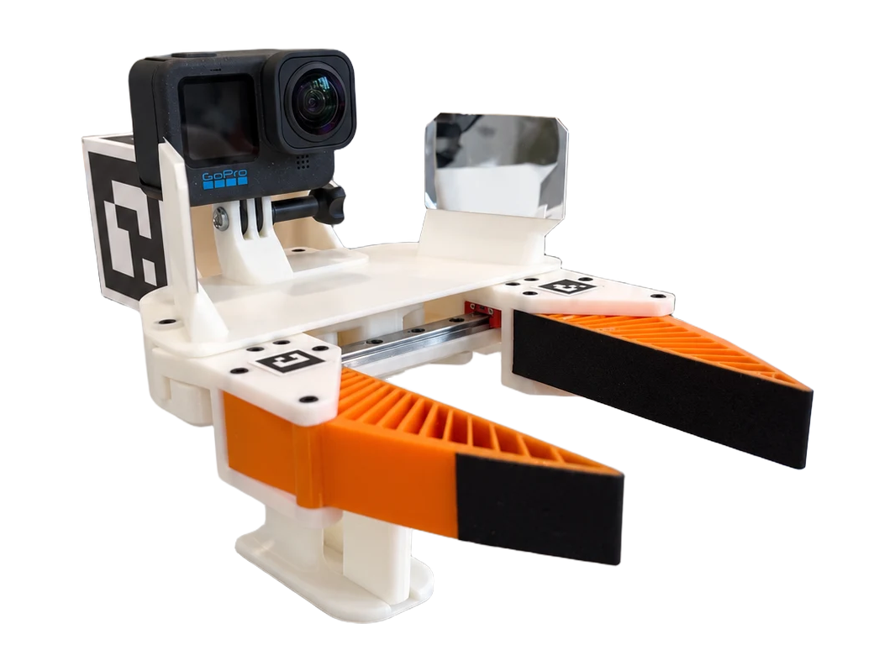

Independent catalogue of data capture equipment. Search, compare and verify specifications field by field.
Independent by design — No paid listings. No affiliate links. No manufacturer rankings. Every figure has a source and a retrieval date. If the manufacturer does not state it, the field stays not stated.
Recently added

LivSyn Robotics
LivEgo

X Square Robot
QUANXTA Zero-E0

Virdyn
VDEgo-C2

Franka Robotics
Franka GELLO

Trossen Robotics
Glide

ZeroLab
F2

X Square Robot
QUANXTA Zero-G1

Wake
UMI Gripper